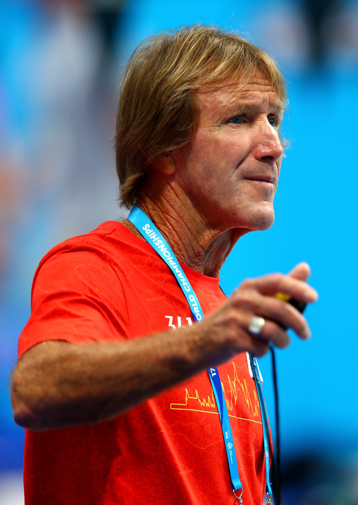

A swimming coach inspiration

Denis Cotterell
Denis Cotterell, a graduate in Physcial Education and a top-level coach in the Australian coach accreditation program, is one of a new breed of coaches who has studied both professionally and by association with top coaches throughout the world.
Denis began his coaching career in 1967 as a junior coach with the late Gordon Petersen at the famous Valley pool in Brisbane. Shortly after that time, Shane Gould came to Petersen when her father was transferred to Queensland as an airline executive. Coach Petersen had many national champions and the young Cotterell was exposed to top coaching and world class athletes at an early age.
Cotterell is the coach with the film-star looks. He was mistaken for Paul Hogan, the Australian actor of "Crocodile Dundee" fame, when he travelled to Canada with a national junior team. His bronzed looks and blond hair are typical of those who lead the active life on Queensland's Gold Coast, where he is also a member and coach of the Surfers Paradise Life Saving Club. Many of his athletes swim for both the Miami Swim Club and a Surf Club.
Most of all, Denis says that he has gained a great deal of his knowledge from other Australian team coaches while he was a member of national teams. Denis makes special mention of the role Gennadi Touretski has played since his arrival in Australia in furthering Cotterell's knowledge of the sport. Since 1987 he has been chosen for 12 national teams for major international meets:
Pan Pacs-1987, 1989, 1993, 1997
Commonwealths-1990, 1994, 1998
World Championships-1991, 1994, 1998
Olympic Games-1988
Ten swimmers have been selected from his Miami Club to Australian teams for major international championships. The most notable of these have been: the current world champion Grant Hackett; Andrew Baildon, former Commonwealth sprint freestyle record holder; World Championship and Olympic Games medallist Daniel Kowalski and Olympic backstroker Joanne Meehan. Another backstroker, 15-year-old Giaan Rooney, has been selected on this years' Commonwealth Games team.
This all round coach has also placed butterflyer Jon Sieben, backstroker Toby Haenen, and breaststroker Brett Stocks on national teams in comebacks to top swimming.